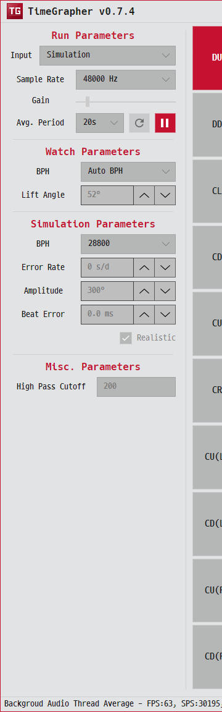

왼쪽 메뉴 사용법 · Left-panel controls · Controles do painel esquerdo
왼쪽 패널은 위에서부터 Run · Watch · Simulation · Misc 네 묶음으로 나뉘며, 측정 조건을 정하고 측정을 시작합니다. 패널 오른쪽의 포지션 스트립, 창 아래의 상태 바, Long-Term 탭의 리뷰 바도 함께 설명합니다.
The left panel has four sections — Run · Watch · Simulation · Misc — that set up and start a measurement. The position strip, bottom status bar, and Long-Term tab review bar are covered here too.
O painel esquerdo tem quatro seções — Run · Watch · Simulation · Misc — que configuram e iniciam uma medição. A faixa de posição, a barra de status inferior e a barra de revisão da aba Long-Term também são abordadas aqui.

언제 잠기나요? 측정이 진행 중일 때는 대부분의 파라미터가 비활성화됩니다. 값을 바꾸려면 ⏸로 일시정지하거나 정지한 뒤 수정하세요. (Scope Scale처럼 실행 중에도 바꿀 수 있는 항목은 따로 표시했습니다.)
When are controls locked? While a run is active, most parameters are disabled. Pause (⏸) or stop to change them. A few (e.g. Scope Scale) remain live — noted where relevant.
Quando os controles ficam bloqueados? Enquanto uma medição está ativa, a maioria dos parâmetros fica desativada. Pause (⏸) ou pare para alterá-los. Alguns (ex.: Scope Scale) permanecem ativos — indicados quando relevante.
① Run Parameters
입력 소스와 캡처 조건, 그리고 측정 시작/정지를 다룹니다.
Input source, capture settings, and the start/stop of a measurement.
Fonte de entrada, configurações de captura e o início/parada de uma medição.
Input
소리를 어디서 받을지 고릅니다. 세 종류가 한 드롭다운에 함께 나열됩니다.
Where the sound comes from. Three kinds appear in one dropdown.
De onde vem o som. Três tipos aparecem em um único menu suspenso.
- Live 마이크 — 컴퓨터에 연결된 실제 캡처 장치. 장치 이름이 그대로 보입니다. 측정 전 마이크 설정(AGC·결합)을 확인하세요.Microphone — a real capture device on the computer; its name is listed. Check microphone setup (AGC & coupling) before measuring.Microfone — um dispositivo de captura real no computador; seu nome é listado. Verifique a configuração do microfone (AGC e acoplamento) antes de medir.
- Playback WAV 재생 — 선택하면 파일 선택 창이 열립니다.
sample/폴더의 예제(예:28800BPH_3135_hulk.wav)를 고르면 됩니다. 모노·표준 샘플레이트 WAV만 받습니다.WAV playback — opens a file picker. Use an example fromsample/. Only mono, standard-rate WAV is accepted.Reprodução de WAV — abre um seletor de arquivos. Use um exemplo desample/. Apenas WAV mono, em taxa padrão, é aceito. - Simulation 합성 신호 — 마이크 없이 아래 Simulation Parameters 값으로 가짜 시계 소리를 만듭니다. 데모·학습용.Synthetic signal — builds a fake watch signal from the Simulation Parameters; no mic needed. For demo/learning.Sinal sintético — constrói um sinal de relógio falso a partir dos Simulation Parameters; sem microfone. Para demonstração/aprendizado.
녹음 — Live·Simulation 실행은 입력을 WAV로 동시에 녹음할 수 있습니다. (Playback은 기존 파일을 재생만 합니다.)
Recording — Live and Simulation runs can record the input to a WAV at the same time. (Playback only plays an existing file.)
Gravação — as execuções Live e Simulation podem gravar a entrada em um WAV ao mesmo tempo. (Playback apenas reproduz um arquivo existente.)
Sample Rate
초당 샘플 수. 선택지는 48000 · 96000 · 192000 Hz입니다. 높을수록 똑/딱 충격의 시간 분해능이 좋아져 비트 오차·진폭 측정이 정밀해지지만 CPU 부담이 커집니다. 장치가 지원하는 값만 활성화됩니다. 192 kHz가 정밀도와 부하의 일반적 절충점입니다.
Samples per second: 48000 · 96000 · 192000 Hz. Higher rates give finer timing resolution (more precise beat-error/amplitude) at higher CPU cost. Only rates the device supports are enabled. 192 kHz is a common sweet spot.
Amostras por segundo: 48000 · 96000 · 192000 Hz. Taxas mais altas dão resolução temporal mais fina (erro de batida/amplitude mais precisos) a um custo maior de CPU. Apenas as taxas suportadas pelo dispositivo ficam habilitadas. 192 kHz é um bom ponto de equilíbrio comum.
Gain
입력 볼륨 슬라이더(0–1000). 파형이 너무 작아 검출이 안 되면 올리고, 클리핑(꼭대기가 잘림)되면 내립니다. Rate/Scope의 스코프에서 트리거(빨간) 선을 적당히 넘는 정도가 적절합니다.
Input volume (0–1000). Raise it if the waveform is too small to detect; lower it if it clips. Aim for peaks that comfortably cross the red trigger line in Rate/Scope.
Volume de entrada (0–1000). Aumente se a forma de onda estiver pequena demais para detectar; reduza se ela saturar. Mire em picos que cruzem confortavelmente a linha de disparo vermelha no Rate/Scope.
마이크 설정 (AGC·결합) · Microphone setup (AGC & coupling) · Configuração do microfone (AGC e acoplamento)
Live 입력에서만 해당합니다(Playback·Simulation은 무관). 마이크 캡처가 왜곡되면 진폭·비트 오차 등 모든 측정이 어긋나므로, 측정 전에 아래 두 가지를 확인하세요.
Applies to the Live input only (Playback/Simulation are unaffected). A distorted mic capture skews every reading (amplitude, beat error, …), so check these two before measuring.
Aplica-se apenas à entrada Live (Playback/Simulation não são afetados). Uma captura de microfone distorcida prejudica todas as leituras (amplitude, erro de batida, …), então verifique estes dois pontos antes de medir.
AGC를 끄세요 — 자동 게인(AGC)·노이즈 억제·"오디오 향상"은 OS 사운드 설정에서 직접 꺼야 합니다. 앱은 이를 자동으로 끄지 못합니다. 켜져 있으면 똑/딱 충격을 눌러 평탄하게 만들거나 부풀려 측정을 무너뜨립니다. Windows: 사운드 설정 → 입력 장치 속성 → 향상(Enhancements)/고급에서 관련 항목 해제. Linux: pw-record/arecord는 기본적으로 AGC를 적용하지 않습니다.
Turn AGC off — disable auto gain control (AGC), noise suppression, and "audio enhancements" in your OS sound settings yourself; the app cannot turn them off. Left on, they flatten or inflate the tic/toc impulses and corrupt readings. Windows: Sound settings → input-device properties → uncheck the enhancement/advanced options. Linux: pw-record/arecord apply no AGC by default.
Desligue o AGC — desative você mesmo o controle automático de ganho (AGC), a supressão de ruído e os "aprimoramentos de áudio" nas configurações de som do seu SO; o aplicativo não consegue desativá-los. Se ligados, eles achatam ou inflam os impulsos tic/toc e corrompem as leituras. Windows: Configurações de som → propriedades do dispositivo de entrada → desmarque as opções de aprimoramento/avançadas. Linux: pw-record/arecord não aplicam AGC por padrão.
마이크 결합(coupling) — 시계와 마이크 픽업을 단단하고 안정적으로 밀착시키세요. 결합이 헐겁거나 흔들리면 신호가 약해지거나 왜곡돼 검출이 불안정해집니다. 밀착한 뒤 Gain으로 레벨을 맞추고, Rate/Scope에서 파형이 트리거 선을 안정적으로 넘는지 확인하세요.
Microphone coupling — hold the watch firmly and steadily against the microphone pickup. A loose or shifting coupling weakens or distorts the signal and makes detection unstable. Once seated, set the level with Gain and confirm the waveform reliably crosses the trigger line in Rate/Scope.
Acoplamento do microfone — mantenha o relógio firme e estável contra o captador do microfone. Um acoplamento solto ou que se desloca enfraquece ou distorce o sinal e torna a detecção instável. Uma vez encaixado, ajuste o nível com Gain e confirme que a forma de onda cruza a linha de disparo de forma confiável no Rate/Scope.
Avg. Period
측정값을 평균 내는 시간 창(초). 선택지는 2 · 4 · 8 · 10 · 12 · 20 · 30 · 40 · 50 · 60 · 120 · 240초. 짧게 하면 변화에 빨리 반응하지만 값이 출렁이고, 길게 하면 안정적이지만 반응이 느립니다. 정밀 측정은 길게, 조정 중 즉각 반응은 짧게.
The averaging window (seconds): 2 · 4 · 8 · 10 · 12 · 20 · 30 · 40 · 50 · 60 · 120 · 240. Shorter reacts fast but is jittery; longer is steady but slow. Use long for precise readings, short for live feedback while regulating.
A janela de média (segundos): 2 · 4 · 8 · 10 · 12 · 20 · 30 · 40 · 50 · 60 · 120 · 240. Mais curta reage rápido, mas oscila; mais longa é estável, mas lenta. Use longa para leituras precisas, curta para feedback ao vivo durante a regulagem.
Reset / 재생·일시정지 버튼Reset / Play–Pause buttonsBotões Reset / Play–Pause
- ⟳ Reset
- 입력 장치 목록을 새로 읽고 상태를 초기화합니다. 마이크를 꽂았는데 목록에 없을 때 누르세요.Re-scans input devices and resets state. Press it if a just-plugged mic isn't listed.Reexamina os dispositivos de entrada e reinicia o estado. Pressione se um microfone recém-conectado não estiver listado.
- ▶ / ⏸
- 측정 시작/일시정지. 같은 버튼이 상태에 따라 ▶(시작)와 ⏸(일시정지)로 바뀝니다. 일시정지하면 Long-Term 탭의 리뷰 바를 쓸 수 있습니다.Start / pause the measurement. The one button toggles between ▶ and ⏸. Pausing enables the review bar inside the Long-Term tab.Inicia / pausa a medição. O mesmo botão alterna entre ▶ e ⏸. Pausar habilita a barra de revisão dentro da aba Long-Term.
② Watch Parameters
측정 대상 시계의 사양을 알려 줍니다. 정확한 측정의 핵심이므로 시계에 맞게 설정하세요.
Tell the app about the watch being measured. Correct values here are essential for accurate readings.
Informe ao aplicativo sobre o relógio que está sendo medido. Valores corretos aqui são essenciais para leituras precisas.
- BPH
- BPH. 잘 모르면 Auto BPH를 두면 신호에서 자동 추정합니다. 알고 있으면 정확한 값(예: 21600, 28800)을 직접 고르는 편이 검출이 더 안정적입니다.BPH. Leave it on Auto BPH to estimate it from the signal, or pick the exact value (e.g. 21600, 28800) for steadier detection if you know it.BPH. Deixe em Auto BPH para estimá-lo a partir do sinal, ou escolha o valor exato (ex.: 21600, 28800) para uma detecção mais estável, se você o conhecer.
- Lift Angle
- 리프트각(30–70°). 무브먼트 고유값으로 진폭(amplitude) 계산에 직접 쓰입니다. 시계/무브먼트 사양서 값(흔히 52°)을 넣으세요. 틀리면 진폭이 통째로 어긋납니다.Lift angle (30–70°). A movement constant used directly to compute amplitude. Enter the spec value (often 52°). A wrong value skews amplitude across the board.Ângulo de alçamento (30–70°). Uma constante do movimento usada diretamente para calcular a amplitude. Insira o valor de especificação (geralmente 52°). Um valor errado distorce a amplitude por completo.
③ Simulation Parameters
Simulation 입력일 때만 의미가 있습니다. 만들어 낼 가짜 시계의 특성을 정합니다 — 정상 시계가 어떻게 보이는지, 또는 특정 결함이 그래프에 어떻게 나타나는지 연습할 때 유용합니다.
Only relevant with the Simulation input. Defines the synthetic watch — handy to learn what a healthy watch looks like, or how a specific fault appears on the graphs.
Relevante apenas com a entrada Simulation. Define o relógio sintético — útil para aprender como é um relógio saudável, ou como uma falha específica aparece nos gráficos.
- BPH
- 합성 시계의 BPH(자동 항목 없음, 직접 선택).The synthetic watch's BPH (no Auto here — pick a value).O BPH do relógio sintético (sem Auto aqui — escolha um valor).
- Error Rate
- 하루 오차(s/d, −999~999). 양수면 빠르게, 음수면 느리게 가는 시계를 흉내 냅니다.Daily error (s/d, −999…999). Positive = a fast watch, negative = slow.Erro diário (s/d, −999…999). Positivo = relógio adiantado, negativo = atrasado.
- Amplitude
- 진폭(°, 100–360). 건강한 시계는 보통 270–300°.Amplitude (°, 100–360). Healthy is typically 270–300°.Amplitude (°, 100–360). O saudável é tipicamente 270–300°.
- Beat Error
- 비트 오차(ms, −10~10, 0.1 단위). 똑/딱 비대칭을 흉내 냅니다.Beat error (ms, −10…10, 0.1 step). Emulates tic/toc asymmetry.Erro de batida (ms, −10…10, passo de 0,1). Emula a assimetria tic/toc.
- Realistic
- 체크하면 잡음·미세 변동을 더해 실제 녹음에 가깝게 만듭니다. 끄면 깔끔한 이상적 신호.Adds noise and small variation for a more lifelike signal. Off = a clean ideal signal.Adiciona ruído e pequenas variações para um sinal mais realista. Desligado = um sinal ideal e limpo.
④ Misc Parameters
검출·표시를 미세 조정하는 고급 옵션입니다. 기본값으로 두어도 대부분 잘 동작합니다.
Advanced options that fine-tune detection and display. Defaults work for most cases.
Opções avançadas que ajustam finamente a detecção e a exibição. Os padrões funcionam na maioria dos casos.
- High Pass Cutoff
- 하이패스 필터의 차단 주파수. 이 값 아래의 낮은 주파수(손 떨림·취급 잡음·배경 진동 등)를 걸러 냅니다. 저주파 잡음이 검출을 방해하면 올리고, 신호가 약해지면 내립니다.High-pass cut-off frequency. Removes low-frequency content below it (handling noise, background rumble). Raise it if low rumble disturbs detection; lower it if the signal weakens.Frequência de corte do filtro passa-altas. Remove o conteúdo de baixa frequência abaixo dela (ruído de manuseio, estrondo de fundo). Aumente se um estrondo grave atrapalhar a detecção; reduza se o sinal enfraquecer.
- Scope Scale
- 스코프류 그래프의 세로 확대 배율(1–8). 파형이 작으면 키워서 봅니다. 실행 중에도 변경됩니다(검출에는 영향 없음, 보기 전용).Vertical zoom for scope-style graphs (1–8). Magnify a small waveform. Changeable during a run (display-only, doesn't affect detection).Zoom vertical para os gráficos do tipo osciloscópio (1–8). Amplie uma forma de onda pequena. Alterável durante uma medição (apenas exibição, não afeta a detecção).
- Verdict Beats
- Vario, Positions, Health 판정이 Measuring…에서 벗어나기 전에 요구하는 최소 beat 수입니다. 기본값은 30이며, 짧게 하면 판정이 빨리 뜨고 길게 하면 평균이 더 안정된 뒤 판정합니다. 실행 중에는 같은 세션의 기준이 바뀌지 않도록 잠깁니다.Minimum beats required before Vario, Positions, and Health leave Measuring…. Default is 30; lower values answer sooner, higher values wait for a steadier average. It is locked during a run so one session keeps one verdict threshold.Número mínimo de batidas exigido antes que Vario, Positions e Health saiam de Measuring…. O padrão é 30; valores menores respondem mais cedo, valores maiores aguardam uma média mais estável. Fica bloqueado durante uma medição para que uma sessão mantenha um único limiar de veredito.
- Use C-onset timing
- 진폭을 계산할 때 C 충격의 피크 시각 대신 온셋(시작 가장자리) 시각을 쓰도록 바꿉니다. 일부 무브먼트에서 Amplitude가 더 안정적으로 잡힙니다. (Escapement 참고.)Use the C impulse's onset timing instead of its peak timing when computing Amplitude. Can be steadier on some movements. (See Escapement.)Usa o tempo de onset (borda inicial) do impulso C em vez do tempo do pico ao calcular a Amplitude. Pode ser mais estável em alguns movimentos. (Veja Escapement.)
- PLL Event Veto
(impulse rejection) - 위상 추적(PLL)이 예상한 박자에서 크게 벗어난 충격을 거부해, 똑딱이 아닌 일회성 잡음(탭·툭 치는 소리)이 측정을 망치지 않게 합니다. 취급 잡음이 많은 환경에서 켜세요.Lets the phase tracker (PLL) reject impulses that fall far from the expected beat, so one-off knocks/taps don't corrupt readings. Turn on in noisy/handling-heavy setups.Permite que o rastreador de fase (PLL) rejeite impulsos que ficam muito longe da batida esperada, para que pancadas/toques isolados não corrompam as leituras. Ligue em configurações ruidosas ou com muito manuseio.
포지션 스트립 · Position strip · Faixa de posição
왼쪽 패널과 그래프 사이의 세로 버튼 묶음입니다. 시계를 놓은 자세(문자판 위/아래, 또는 6·9·3·12시 방향이 위로 향하는 수직 자세 등)를 고릅니다. 표준 시계 검사는 여러 자세에서 측정해 균형을 보는데, 여기서 고른 자세가 측정값에 라벨로 붙고 Positions 그래프의 해당 행에 누적됩니다. 현재 자세는 창 아래 상태 바에도 표시됩니다.
The vertical button group between the panel and the graphs. It selects the watch's watch position (dial up/down, or 6/9/3/12 o'clock up, etc.). Standard watch testing measures several positions to check balance; the position you pick here labels the readings and accumulates into the matching row of the Positions graph. The active position also shows in the status bar.
O grupo de botões verticais entre o painel e os gráficos. Seleciona a posição do relógio (mostrador para cima/baixo, ou 6/9/3/12 horas para cima, etc.). O teste padrão de relógios mede várias posições para verificar o equilíbrio; a posição que você escolhe aqui rotula as leituras e se acumula na linha correspondente do gráfico Positions. A posição ativa também aparece na barra de status.
자세 코드는 NIHS 95-10 / ISO 3158 표준을 따르며, 버튼에는 NIHS/Witschi 표기(CH·CB와 시각 라벨)가 그대로 쓰입니다. CH·CB는 문자판을 위/아래로 둔 수평 자세이고, 나머지는 그 시각 방향이 위로 향하는 수직 자세입니다. 기본 4개(12H·3H·6H·9H) 사이에 45° 중간 자세(1:30H·4:30H·7:30H·10:30H)가 끼어 시계 방향 순서로 나열되며, 중간 자세는 필요할 때만 씁니다. 표 오른쪽 ISO 3158 열(DU·CL 등)은 같은 자세의 영문 표기입니다.
Position codes follow NIHS 95-10 / ISO 3158; the buttons use the NIHS/Witschi labels (CH·CB and hour positions). CH·CB are the flat (horizontal) positions with the dial up/down; the rest are vertical positions with that hour mark pointing up. The four cardinal verticals (12H·3H·6H·9H) are interleaved with the 45° intermediates (1:30H·4:30H·7:30H·10:30H) in clockwise order; the intermediates are used only when needed. The right-hand ISO 3158 column (DU, CL, …) is the English designation for the same orientation.
Os códigos de posição seguem a NIHS 95-10 / ISO 3158; os botões usam os rótulos NIHS/Witschi (CH·CB e posições horárias). CH·CB são as posições planas (horizontais) com o mostrador para cima/baixo; as demais são posições verticais com aquela marca de hora apontando para cima. As quatro verticais cardeais (12H·3H·6H·9H) são intercaladas com as intermediárias de 45° (1:30H·4:30H·7:30H·10:30H) em ordem horária; as intermediárias são usadas apenas quando necessário. A coluna ISO 3158 à direita (DU, CL, …) é a designação em inglês para a mesma orientação.
| 기호 · Code · Código | 프랑스어 원어 · French (NIHS) · Francês (NIHS) | 실제 시계의 상태 · Orientation · Orientação | ISO 3158 |
|---|---|---|---|
| CH | Cadran Haut | 문자판이 위를 봄 (평평하게 눕힘)Dial up — watch lying flatMostrador para cima — relógio deitado na horizontal | DU |
| CB | Cadran Bas | 뒷뚜껑이 위를 봄 (엎어놓음)Dial down — lying face-downMostrador para baixo — deitado de face para baixo | DD |
| 12H | 12h Haut | 12시 방향이 위로 향함 = 용두가 오른쪽12 o'clock up = crown to the right12 horas para cima = coroa à direita | CR |
| 1:30H | 1h30 Haut | 대각선 중간 자세 — 용두가 위-오른쪽Diagonal intermediate — crown up-rightIntermediária diagonal — coroa para cima-direita | CU(R) |
| 3H | 3h Haut | 3시 방향이 위로 향함 = 용두(크라운)가 하늘을 향함 (가장 흔한 자세)3 o'clock up = crown points up (the most common position)3 horas para cima = coroa apontando para cima (a posição mais comum) | CU |
| 4:30H | 4h30 Haut | 대각선 중간 자세 — 용두가 위-왼쪽Diagonal intermediate — crown up-leftIntermediária diagonal — coroa para cima-esquerda | CU(L) |
| 6H | 6h Haut | 6시 방향이 위로 향함 = 용두가 왼쪽 (세움)6 o'clock up = crown to the left (hanging)6 horas para cima = coroa à esquerda (pendurado) | CL |
| 7:30H | 7h30 Haut | 대각선 중간 자세 — 용두가 아래-왼쪽Diagonal intermediate — crown down-leftIntermediária diagonal — coroa para baixo-esquerda | CD(L) |
| 9H | 9h Haut | 9시 방향이 위로 향함 = 용두가 아래9 o'clock up = crown points down9 horas para cima = coroa apontando para baixo | CD |
| 10:30H | 10h30 Haut | 대각선 중간 자세 — 용두가 아래-오른쪽Diagonal intermediate — crown down-rightIntermediária diagonal — coroa para baixo-direita | CD(R) |
상태 바 · Status bar (창 아래) · Barra de status (parte inferior da janela)
창 맨 아래 줄. 왼쪽부터:
The bottom strip of the window. From left:
A faixa inferior da janela. Da esquerda:
- 상태 메시지Status textTexto de status
- 현재 동작/안내(파일 로드 결과, 오류 등).Current activity or messages (file-load result, errors).Atividade ou mensagens atuais (resultado de carregamento de arquivo, erros).
- 포지션PositionPosição
- 현재 선택된 시계 자세(NIHS 95-10 / ISO 3158).The active watch position (NIHS 95-10 / ISO 3158).A posição ativa do relógio (NIHS 95-10 / ISO 3158).
- 지연시간LatencyLatência
- 캡처→표시까지의 평균/최악 지연, 버린 입력 샘플/합쳐진 UI 프레임, 놓친 비트, 동기 손실 횟수. 실시간 성능을 한눈에 보는 지표입니다.End-to-end avg/worst latency (capture→display), dropped input samples / coalesced UI frames, missed beats, sync losses — a quick real-time-performance gauge.Latência média/pior de ponta a ponta (captura→exibição), amostras de entrada descartadas / quadros de UI agrupados, batidas perdidas, perdas de sincronia — um indicador rápido do desempenho em tempo real.
리뷰 바 · Review bar (Long-Term) · Barra de revisão (Long-Term)
Long-Term 탭 안에 항상 보이며, 실행 중에는 비활성화되어 있습니다. ⏸로 일시정지하면 활성화되어 데이터를 잃지 않고 지난 Long-Term 기록을 되짚어 볼 수 있습니다.
Always visible inside the Long-Term tab, disabled while the run is live. Pause (⏸) to enable it and scrub back through the Long-Term recording without losing data.
Sempre visível dentro da aba Long-Term, desativada enquanto a medição está ao vivo. Pause (⏸) para habilitá-la e percorrer de volta a gravação Long-Term sem perder dados.
- −1 s / +1 s 리뷰 커서를 1초씩 뒤/앞으로 이동.Move the review cursor 1 second back/forward.Move o cursor de revisão 1 segundo para trás/frente.
- 슬라이더 — Long-Term 기록 전체를 자유롭게 스크럽. 세 Long-Term 플롯과 아래 읽기값이 그 시점으로 갱신됩니다.Slider — scrub anywhere through the Long-Term recording; the three Long-Term plots and readouts update to that moment.Controle deslizante — percorra qualquer ponto da gravação Long-Term; os três gráficos Long-Term e as leituras se atualizam para aquele momento.
- LIVE 커서를 지우고 가장 최신 값으로 복귀.Clear the cursor and jump back to the newest reading.Limpa o cursor e salta de volta para a leitura mais recente.
- 읽기 라벨 — 현재 커서 위치 / 마지막으로 캡처된 시각.Readout — cursor position / latest captured time.Leitura — posição do cursor / horário capturado mais recente.
창 맨 위 오른쪽 버튼(테마 · 도움말 · 설정 등)은 상단 바 페이지에서 설명합니다.
The buttons at the top-right of the window (theme · help · settings, …) are documented on the Top bar page.
Os botões no canto superior direito da janela (tema · ajuda · configurações, …) são documentados na página Barra superior.